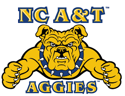

I'm a PhD candidate at NCA&T.My research interests are in the fields of machine learning ,data mining and Cyber security. I'd like to make computers do more with less help from us, learn from experience, adapt effortlessly, and discover new knowledge. We need computers that reduce the information overload by extracting the important patterns from masses of data.
Education
North Carolina Agricultural and Technical State University Master of Sciences in Computer Science

Jawaharlal Nehru Technological University
Bachelor of Technology Computer Science and Engineering. Hyderabad, India